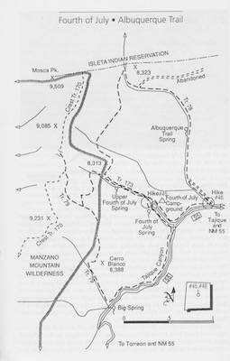
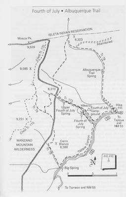

Hike New Mexico
w/ Tom & Ken
Albuquerque Trail
| Difficulty | Round-trip | Type | Elev. Chg. | Exposure | Wow Factor | Facilities | Seasons | Get There |
|---|---|---|---|---|---|---|---|---|
| Easy-Meidum | 5 miles | Loop | 600 ft | Fairly shady | Forest views | Campground | Not Winter | Directions |


 

- Sep 19, 2014: A lovely east-side view of the Monzanos
- Oct 30, 2014: Ponderosas supplement the maples
- Oct 30, 2014: The distincitve alligator juniper bark
- Oct 30, 2014: Too early for full autumn, but a taste
- Oct 30, 2014: Connector from Fourth of July
- https://www.flickr.com/photos/139088815@N08/27367947513/in/album-72157670395400435
- https://www.flickr.com/photos/139088815@N08/27981569035/in/album-72157670395400435
- https://www.flickr.com/photos/139088815@N08/27367937663/in/album-72157670395400435
- https://www.flickr.com/photos/139088815@N08/27879760302/in/album-72157670395400435
- https://www.flickr.com/photos/139088815@N08/27368625204/in/album-72157670395400435
The Albuquerque Trail connects with the Fourth of July Trail, and can be accessed from the same area. It does not ascend to the crest trail, but climbs somewhat up to the Isleta Reservation boundary fence, and loops around a canyon, providing some very nice views. Much of it is in the woods, with reduced visibility, but the hike is very pleasant nonetheless. Both of the books Hiking New Mexico by Laurence Parent, and 100 Hikes In NewMexico provide good hike and travel details. It is difficult to find good online references for this hike.